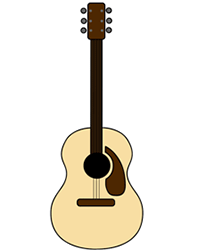
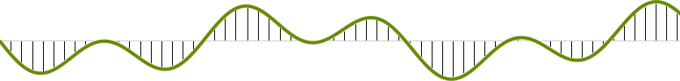
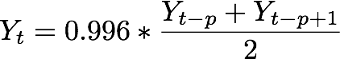

The two primary components that make the Karplus-Strong algorithm work are the feedback mechanism and the averaging operation.
The two primary components that make the Karplus-Strong algorithm work are the feedback mechanism and the averaging operation.
Figure 1. Your Computer
In this lab, we will use what we have learned about sequences so far in this class to simulate the pluck of a guitar string using our computers. We will use the Karplus-Strong algorithm, named after its developers Alexander Strong and Kevin Karplus. By the end of the lab, you will have successfully turned your computer into a fully functional musical instrument, capable of playing notes, chords, and songs, all out of a few sequences!
This lab is an adaptation of the Guitar Heroine assignment developed at Princeton by Andrew Appel, Jeff Bernstein, Maia Ginsburg, Ken Steiglitz, Ge Wang, and Kevin Wayne. Portions of this lab, including certain images and text, have also been adapted from the content found on this BBC Blog Post.
This lab includes two files, but all of your changes will be made to the first one.
| A starter implementation for a guitar simulator. | |
| Functions for serving your code to a webpage. |
Before we dive into the algorithm, let's revisit some operations that we can apply to tuples that will be useful later.
Try to guess what Python will do for the following expressions. Check your answer using the Python interpreter. (Note: remember, computer scientists always start counting from 0!)
>>> for item in (1,2,3,4,5): ... print(item * item) ... >>> a = (1,2,3) * 3 >>> a >>> len((1,2,3)) >>> len((1, (2,3), 4)) >>> b = ((1,2,3,4) + (5,6,7,8))[4] >>> b
For each of the following tuples, give the correct expression to get 7.
>>> x = (1, 3, (5, 7), 9) >>> #YOUR EXPRESSION INVOLVING x HERE 7 >>> y = ((7,),) >>> #YOUR EXPRESSION INVOLVING y HERE 7 >>> z = (1, (2, (3, (4, (5, (6, 7)))))) >>> #YOUR EXPRESSION INVOLVING z HERE 7
The sounds that we hear in our day-to-day lives travel through the air as waves. When there is a disturbance in the air (like the pluck of a string or a clap of one's hands), the resulting pressure that is produced propogates through the air as waveform which humans can hear. A sound wave may thus look something like this:

A sound wave is an analog signal, which means that over time it is composed of infinitely many values. Obviously, computers have limited space, and therefore cannot store an infinite number of values in memory. In order to represent a sound wave using a computer, we sample it at specific intervals. If you think of a wave as a continuous function f(x), then sampling simply means choosing certain x-values at which to compute the function, and storing the resulting y-values in a list. Therefore, to a computer, a sound wave is just a long list of numbers, where each number is sample of the wave at a certain time.
As you might guess, the more samples we have, the more accurate our sound will be. The sampling rate is how many times per second we choose to sample the wave. For CD audio, this value is 44,100, which means that 44,100 data values are encoded each second, which can be written as 44.1kHz. So we know how general sound is represented, bu what about notes? Each note in the modern chromatic scale is associated with a certain frequency (measured in Hz). The frequency of a note corresponds to the number of periods of that note's sound wave that occur each second. For example, the 49th key on a modern piano (A) has a frequency of 440 Hz. Similarly, the middle C has a frequency of about 262 Hz.
Let's take a close look at what happens when we pluck a guitar string, since that is what we will be simulating in the coming exercises. At first, the string is highly energized and it vibrates rapidly, creating a fairly complex (meaning rich in harmonics) sound. Gradually, due to friction between the air and the string, the string's energy is depleted and the wave becomes less complex, resulting in a "purer" tone with fewer harmonics. After some amount of time all of the energy from the pluck is gone, and the string stops vibrating.
Now that we have a physical idea of what's happening in a plucked string, how can we model it with a computer? That's where the Karplus-Strong algorithm comes into play. Here's how it works: first we start with a sequence full of random values: noise. Then, we generate new values by replicating previous ones at a particular frequency p. Mathematically, the Karplus-Strong update is defined in terms of previous samples:
In the equation above, Y is a sequence of samples, and p is the frequency of the note we want to simulate (e.g., 440 for an A). To generate samples for a note, we start with p samples of noise, then many times we add a new sample using the Karplus-Strong update. Below, the update is illustrated for p equal to 10.
The two primary components that make the Karplus-Strong algorithm work are the feedback mechanism and the averaging operation.
To build up a sequence incrementally, we need a sequence type to which we can add new elements. Python tuples cannot be changed (they are immutable), but Python has another built in data structure called a list that is well-suited to our problem. You will learn about lists in upcoming lectures.
Lists and tuples share much in common, but to construct a list we use square brackets rather than parentheses. All sequence and arithmetic operations behave in the same way for tuples and lists (including slicing, addition, len). Unlike tuples, we can modify lists! For instance. we can add new elements to the end with the append method. Here are some practice exercises to get you familiar with lists:
>>> a = [] # empty list >>> a = a + [1,2,3] >>> len(a) >>> a = a * 2 >>> a >>> a.append(4) >>> a >>> a[0] = 88 >>> a >>> a[3:6] # slicing >>> a[:2] # more slicing
The last thing we need before implementing our guitar is a random number generator. Luckily, Python has a module built just for this purpose. The function random returns a
random decimal value between 0 and 1:
>>> from random import random >>> random() >>> random() >>> random()
Ok, phew, enough theory. Let's start building this thing!
I. NoiseIn guitar_heroine.py, fill in the function create_noise. This function takes in an argument n and returns a list of n random values between -0.5 and 0.5. Talk to a neighbor to see how you can obtain such numbers using the function random.
Next, complete the function definition of apply_ks, which takes in an intial sequence of noise (called s) and applies the Karplus-Strong update to this sequence n times, appending a new sample each time. The frequency p is the initial length of s. Check that you pass the doctest for this function.
After you have completed this part, save your code and run 'python3 server.py' from the terminal. The open Firefox and go localhost:8000. If your code works, you should see letters on the screen followed by musical notes names. Press any letter that's listed on your keyboard to play the corresponding note.
Notes: The keyboards have volume controls, so if you don't hear any sound, try increasing the volume first. Also, the lab machines are ancient, and so sometimes you need to refresh the page twice when you make an update in order to have the sound work. If you change your code, you will have to stop and start Python again.
III. ChordsIn music, chords are sounds achieved by playing multiple notes simultaneously. Luckily, chords are easy to implement once we have notes. Mathematically, a chord is the superposition of its component notes. Say we want to build an C major chord (C, E, G). Each of these three notes has samples, and to build the chord we need to do an element wise addition of each note's samples. For example:
If C's samples were [0.25, 0.4, 0.3, ... ] and E's samples were [0.25, 0.2, 0.1, ... ] and G's samples were [0.15, 0.1, 0.35,... ] Then the C major chord's samples would be [0.65, 0.7, 0.75, ...]Implement the function
make_chord, which takes in 3 notes and returns the samples of the chord defined by these notes. To obtain the samples of a particular note
x, call guitar_string(x).
IV. Songs
We now have all the building blocks -- let's make some songs!. Your first job is to fill in the function songify. This function takes in a list of notes (each represented as strings), and should return a list of each note's samples, which itself is a list.
After you have completed songify, find the function make_song and modify the list notes with a song of your choice. The list that you fill in represents
the notes that will be played in your song sequentially. You can also use chords in your song by calling make_chord! The notes that we have given you begin the tune Twinkle Twinkle, with a chord inserted for demonstration purposes.
'python3 server.py' from the terminal and navigate to localhost:8000.
Now hit the 'Play Song' button, and enjoy your work!
Congratulations! You have succesfully turned your computer into a working guitar. Feel free to create more complicated tunes using your new creation.
Developed by Varun Pai and John DeNero for CS 61A at UC Berkeley. Based on the Guitar Heroine nifty assignment.